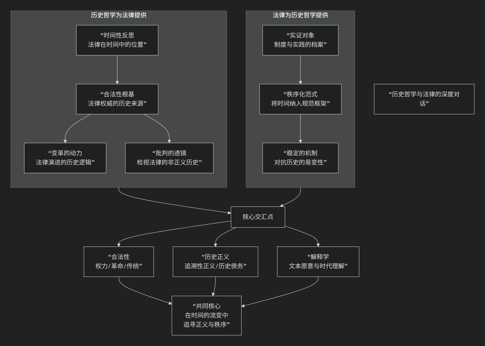

历史哲思
历史哲学是对历史本身进行哲学反思的学科，它不研究具体的历史事件，而是追问：历史作为一个整体，是否有其意义、模式或规律？我们如何能够认识历史？历史知识的性质是什么？
其发展主要分为两大范式：传统的历史哲学（思辨的历史哲学） 和 现代的历史哲学（分析的历史哲学）。它们所关注的核心问题与演变脉络，可以通过下图清晰地展现：

以下，我们将沿此脉络，深入解析历史哲学的各流派及其核心思想。
一、传统历史哲学（思辨的历史哲学）
这种范式盛行于古代至19世纪，旨在 探寻历史整体进程的模式、动力和终极目的，试图构建一个宏大的历史叙事框架。它关注的是 “历史本身是什么”。
主要流派与代表人物：
1. 神学史观（目的论）
核心思想：历史是 神意 的实现过程，具有明确的开端、过程和终点。
代表人物：
圣·奥古斯丁 ：在《上帝之城》中提出，人类历史是“上帝之城”与“世俗之城”之间斗争的过程，最终将迎来“上帝之城”的永恒胜利。历史具有 线性、有目的 的特征。
2. 唯心史观（理性目的论）
核心思想：历史是 理性 或“世界精神”自我实现的过程，自由意识的进展是历史的最终目的。
代表人物：
G.W.F. 黑格尔 ：提出 “理性统治世界历史” 。历史是“世界精神”通过“理性的机巧”（如历史人物的热情）逐步实现自身自由的过程，每一个历史阶段都是世界精神发展的必要环节。他提出了“正-反-合”的辩证发展模式。
3. 唯物史观（经济决定论）
核心思想：历史发展的根本动力是 物质生产方式 的变革，阶级斗争是推动历史前进的直接动力。
代表人物：
卡尔·马克思 ：将黑格尔的唯心辩证法“倒转”过来，认为不是意识决定存在，而是 社会存在决定社会意识。生产力与生产关系的矛盾运动推动社会形态从原始社会、奴隶社会、封建社会、资本主义社会向共产主义社会演进。这同样是一种宏大的、有规律的历史目的论。
4. 历史循环论
核心思想：历史 没有终极目的，而是在 周期性循环 中运行，如同有机体一样，每个文明都会经历生长、繁荣、衰败和死亡的过程。
代表人物：
二、现代历史哲学（分析或批判的历史哲学）
兴起于20世纪，其关注点发生了 “认识论转向” 。它不再追问历史本身是什么，而是追问：“我们如何认识历史？”、“历史知识的性质是什么？”、“历史叙述如何建构？”。它更关注历史学作为一门学科的方法论和语言基础。
主要流派与代表人物：
1. 覆盖律模型
核心思想：历史解释与自然科学解释在逻辑上同构，即要将待解释的历史事件归入一个 普遍规律 之下。
代表人物：
卡尔·亨佩尔：认为合理解释一个历史事件，必须引用 普遍规律 和 初始条件。这一过于僵化的模型遭到了许多历史学家的反对。
2. 唯心主义史学（移情理解）
核心思想：历史学不同于自然科学，其核心方法是 重演历史行动者的思想。
代表人物：
柯林武德：提出著名论断 “一切历史都是思想史” 。历史学家的任务是在自己心中“重演”过去行动者的思想，理解其行为背后的理由。历史是“过去的思想在史学家心灵中的重演”。
3. 历史叙事主义
核心思想：这是当代历史哲学的主流。它认为历史学家通过 叙事结构 （情节化、论证、意识形态蕴含）来赋予过去事件以意义，历史著作更像是一种 文学创作。
代表人物：
4. 后现代主义史学
核心思想：彻底解构“宏大叙事”，强调历史的 断裂性、碎片化和多元性，关注被主流历史叙述所压抑的声音（如女性、少数族裔）。
代表人物：
米歇尔·福柯：通过 知识考古学 和 系谱学，揭示历史并非连续的进步，而是由不同“知识型”决定的 话语实践 的断裂序列，与权力纠缠在一起。
三、核心要义总结
范式 |
核心问题 |
主要流派 |
关键概念 |
代表人物 |
|---|---|---|---|---|
思辨历史哲学 |
历史本身是什么？（规律、目的） |
神学史观、唯心史观、唯物史观、循环论 |
神意、理性、辩证法、生产方式、阶级斗争、文明周期 |
奥古斯丁、黑格尔、马克思、斯宾格勒 |
分析历史哲学 |
我们如何认识历史？（方法、叙述） |
覆盖律模型、移情理解、叙事主义、后现代主义 |
普遍规律、思想重演、情节化、叙事实体、宏大叙事、权力/知识 |
亨佩尔、柯林武德、海登·怀特、福柯 |
四、总结
总而言之，历史哲学的演变是从 “建构历史的宏大意义” 走向 “反思历史知识如何可能” 的历程。传统哲学家试图为历史找到一个“剧本”，而现代哲学家则转而研究“剧本”是如何被撰写、被阅读的，并质疑是否真的存在一个唯一的、客观的“剧本”。
这一转变使得历史哲学从形而上的思辨，转变为更严谨、更具批判性的学科，深刻影响了我们对历史真实性、客观性及其意义的理解。
历史哲学与法律的关系远比表面看起来的密切，它们共同围绕着 时间、权威、变化与秩序 等核心议题展开。二者的对话，本质上是 “时间中的正义” 与 “正义的秩序化时间” 之间的深刻互动。
其复杂而动态的关联，可以通过下图清晰地展现：

以下，我们将沿此逻辑脉络，深入解析历史哲学与法律之间的深刻关联。
一、历史哲学如何塑造法律？
历史哲学为理解法律提供了关于时间、变化和意义的宏观框架，是法律“何以如此”的深层注脚。
历史哲学流派 |
对法律的根本性影响 |
具体表现 |
|---|---|---|
法律是 实现某种历史终极目标的工具。 |
进步性立法：法律需推动社会向既定目标（如自由实现、无阶级社会）演进。法律本身的正当性也由其是否促进这一历史进程来判断。 |
|
法律是 特定文明生命周期中的有机组成部分，随文明兴衰而演变。 |
法律移植的审慎：强调法律需符合本土文明的”体质”，反对机械照搬。关注法律与文明整体精神的关联。 |
|
法律是 权力话语的构成部分，其历史是权力争夺和排斥的历史。 |
去神秘化：批判法律中立表象，揭示其如何参与塑造并维护压迫性结构（如种族主义、父权制）。关注被主流法律史边缘化的叙事。 |
|
历史主义 （如 萨维尼） |
法律是 民族精神 在历史中缓慢、有机的产物，是”民族精神的沉淀”。 |
反对立法万能：强调习惯法的重要性，认为法典应是民族法惯例的自觉表达，而非理性凭空创造。这是对自然法普适性的批判。 |
二、法律如何回应历史哲学？
法律并非被动接受历史哲学的影响，它通过自身的实践和逻辑，为历史哲学提供了具体的实证领域并构成了一种独特的“秩序化时间”的模式。
法律领域/概念 |
对历史哲学的回应与体现 |
|---|---|
宪法 |
一国政治生活的”历史性总契约”。它凝结了特定的历史时刻（如革命、建国）的根本抉择，并为未来的政治变迁设定了框架，本身就是一种”奠基性历史事件”的法律化。 |
先例与遵循先例 （普通法系核心） |
将历史经验制度化、权威化。过去法官的判决（历史）对当前案件具有约束力，体现了历史智慧在司法中的延续和积累，是一种”在历史中司法”的哲学。 |
法律解释 |
处理”时间距离”的艺术。解释者（法官）如何对待立法原意（历史意图）？是追求”原旨主义”还是强调”活的宪法”？这直接反映了对历史与当下关系的哲学立场。 |
追溯力问题 |
法律在时间中的效力边界。”法不溯及既往”原则体现了对稳定性和信赖利益的保护，是法律对抗历史流变性的”锚”。但某些情况下（如追究反人类罪）的溯及力，则体现了”超越实证法的更高正义”的历史哲学观念。 |
权利的历史生成 |
权利并非先天给定，而是在历史斗争中形成。如财产权、选举权的发展史，本身就是一部微观的历史哲学，展示了权利观念如何随社会变迁而演进。 |
三、核心交汇点：合法性、正义与解释
合法性的根基
问题：法律的权威从何而来？
历史哲学的回答：
革命叙事：合法性源于一个 奠基性的历史事件 （如美国独立战争、法国大革命）。新法律秩序通过与旧时代的决裂而获得正当性。
传统叙事：合法性源于 历史延续性。法律权威因其源远流长、世代相袭而被认可（如英国普通法）。
进步叙事：合法性源于法律推动 社会进步 的能力。
历史正义
问题：如何对待历史上的不公正？
法律实践：追溯性正义，如战后审判（纽伦堡、东京）、真相与和解委员会、历史遗产归还、历史错误纠正与赔偿等。这涉及如何用今天的法律和正义观去评判历史行为，以及国家如何承担历史责任。
历史解释学
问题：如何理解过去的法律文本？
核心争议：是探寻制定者 历史上的原意，还是承认文本在 新的历史语境 下具有新的含义？这本质上是“历史原意”与“当代理解”之间的张力。
四、总结
总而言之，历史哲学与法律的关系是 双向建构、深度互嵌 的。
历史哲学是法律的“时间镜”：它为法律提供了关于自身在时间长河中的位置、意义和变革方向的深层理解。没有历史视角的法律是肤浅的。
法律是历史哲学的“稳定器”：它将流动不居的历史时间纳入相对稳定的规范框架，通过规则和程序将历史经验制度化，从而创造出现世的可预期性和秩序。没有法律形式的历史哲学是空泛的。
理解二者的关系，不仅能让我们更深刻地把握法律的本质——它既是 历史的产物，也是 塑造历史的能动力量 ——也能让我们在面对法律变革与历史正义等复杂问题时，拥有更富洞见的分析框架。